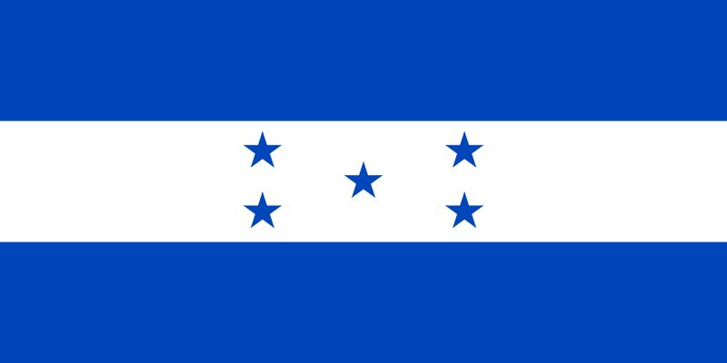

Hello my name is Sandra J Rodriguez, I'm from Honduras, but I live here in United States since 2022. My daughter who has 10 years old is my motivation to continue studying and both have better future. I like the technology and also I want to become a software engineer. I like to spend time with my daughter and have enough time for my classes too.
About me
Web Dev Resources
Cortes, Honduras
Cortes,is the name of the state where I born in my country Honduras, Honduras have two principals capital cities, one is in Cortez and the other one is in Tegucigalpa. Cortez have the most important industrial port with many container with merchandise from other countries as well from Honduras. My country is one of the principals coffee exporters in the world competing with the Colombian coffee, my country is little but have an amazing beaches and paradise in the middle of the nature
